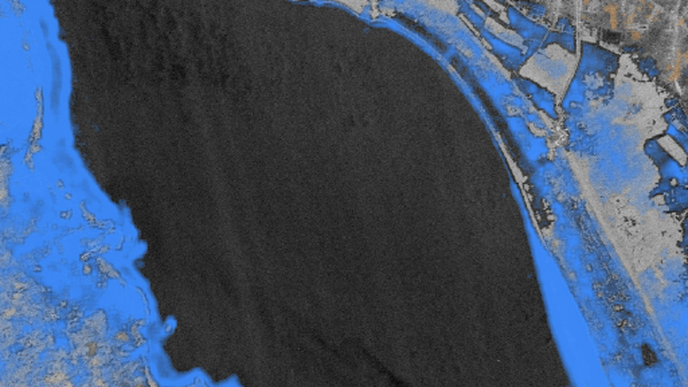
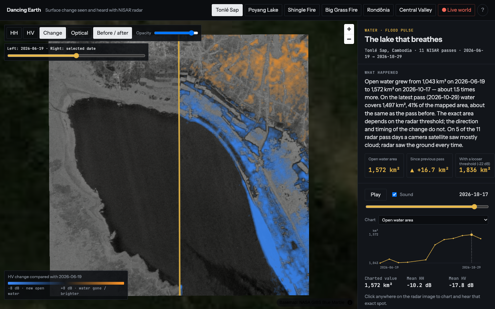
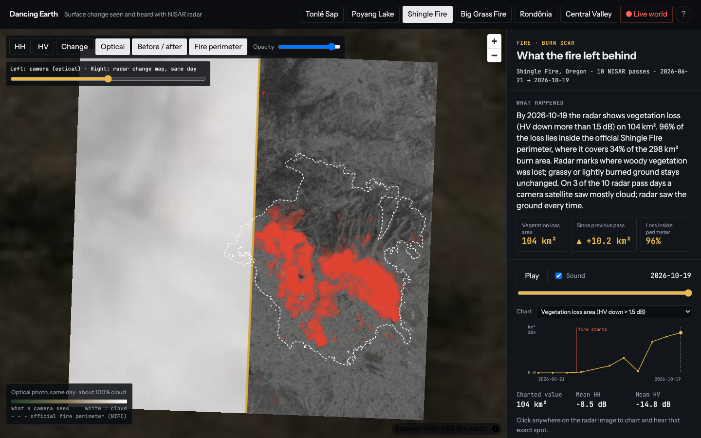

See and hear how Earth's surface changes, with NISAR radar.
A coloured map marks where the surface changed, with a before / after slider and a timeline of every satellite pass.
One plain sentence tells what happened, with square kilometres and a trend. The data can be downloaded as CSV.
Each image becomes music: brightness sets the pitch, the amount of change sets the loudness. Places that change sound different from places that stay still.
Main topic: water (floods and lakes). Also wildfires, forest clearing and farm fields.

Works on a phone, with a keyboard, and has text for screen readers.
How much water is there now, and is it rising? Where inside the fire perimeter was woody vegetation really lost?
Numbers per pass, thresholds, granule names, CSV, and a method section with the limits.
A short story for each place, a slider, and music that makes change easy to notice.
June to October 2026. Over the same months Poyang Lake in China shrank from 2,204 to 644 km². Lesson from the data: wind makes water bright in HH but not in HV, so water is mapped from HV. The exact area depends on the threshold; the trend does not.
104 km² of vegetation loss, compared with the average of the passes before the fire. The perimeter is used only as an independent check.
A 2,350 km² grass fire that L-band radar barely sees. The app shows it and explains why, instead of hiding it.

Other data: official fire perimeters from NIFC (US National Interagency Fire Center), used to check the fire result; satellite orbits from CelesTrak.
Open source, MIT licence. Add a new place by adding its coordinates to one file.
Use of AI. The idea and the decisions are human: a map of surface change, water first, plus fires, plus music from the change. An AI assistant (Claude by Anthropic) wrote most of the code and drafted the English text. No AI-generated images, video or audio are used.
Limits. A drop in radar signal is a hint, not proof. Grass fires and water under trees are mostly invisible. Area numbers are approximate.
Team AlgoryX · Jan Hajduk · NASA Space Apps Challenge 2026 · Dancing with the SARs